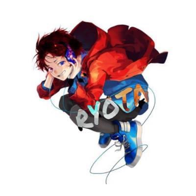
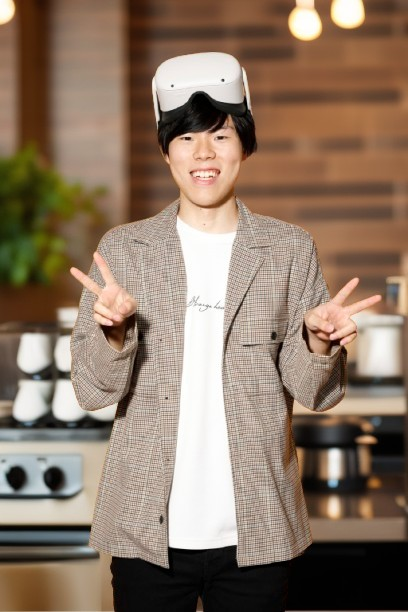

PROFILE
夢を描き、現実を変える。

Mission
挑戦できる居場所を、誰にでも。
Vision
人と人がつながり、夢をかたちにできる社会へ。
Value
- 挑戦の肯定
- 共感と尊重
- 学び続ける姿勢
- 人を巻き込む力
- 現場と本質主義

高校でUnityを学び、ゲーム制作を実践
N高 × バンタンゲームアカデミー高等部にて、ゲーム制作専攻を卒業。
高校生のうちからUnityで2D/3D/VRゲーム開発に取り組み、創作力と技術を磨く。
学内審査会では異例の過去最多4連続で最優秀賞を授与
奇跡のDeNA新卒入社 → IRIAMでUnityエンジニアに
高卒で株式会社ディー・エヌ・エーに新卒入社し、子会社IRIAMへ出向。Unityエンジニアとしてライブ配信アプリ開発に携わるという異例のキャリアを歩む。
新卒の中で初めて会長の南場さんと1on1ランチをした(当時の自分行動力スゴすぎ...)
その後、謎に新卒エンジニア合同採用説明会に登壇することになった(何故だ!?)
統合失調症と向き合い、再起の道へ
退職後に統合失調症を発症。2度の入院と療養を経て、「挑戦できる居場所を、誰にでも」という想いを胸に、IT・マーケティング領域でのキャリアを目指す。